Juliana
Couronnée au rang de Maître à quinze ans, Juliana est devenue du jour au lendemain la jeune prodige de Paldea, tandis que le poids des attentes venait se poser sur ses épaules.
En coulisses, Juliana est une Dresseuse de talent qui dissimule derrière un sourire à quel point elle est brisée : le secret de la Zone Zéro, son rôle dans la perte du Professeur IA, et le blâme brûlant d’un jeune garçon lui ont tous laissé de profondes cicatrices. La culpabilité qu’elle a intériorisée s’est vite transformée en une terreur profonde de la Téracristallisation, cette même puissance qui fait rayonner Paldea. Derrière son apparence impulsive et compatissante, elle masque du mieux qu’elle peut un syndrome de stress post-traumatique et des épisodes dissociatifs.
À présent, un an après une terrible succession d’événements qui l’a forcée à affronter ses pires traumatismes et l’a laissée avec un bras droit téracristallisé, elle va mieux. Juliana a encore des bons et des mauvais jours, mais elle cherche enfin à se faire aider, apprend à s’appuyer sur ses amis et prend du recul vis-à-vis de ses responsabilités.
|
|
|
|
|
|
|
Personnalité
Positifs
- Altruiste
- Résiliente
- Attentionnée
Neutres
- Réservée
- Compétitive
- Têtue
Négatifs
- Répressive
- Autodestructrice
- Téméraire
Héroïne de la région de Paldea, Juliana est une personne naturellement enjouée et souriante. Profondément compatissante, courageuse et altruiste, elle considère ses Pokémon et ses amis comme sa véritable force et famille. Ils n'hésitent pas entre eux à se taquiner sur le ton de la blague, tout en se soutenant mutuellement à travers le meilleur comme le pire. Elle peut se montrer particulièrement têtue et tête brûlée, fonçant tête baissée vers le danger simplement car c'est la bonne chose à faire.
Juliana possède un lourd sens des responsabilités cachant de profondes failles telles qu'une culpabilité excessive et une tendance à l'autodestruction. Elle pense qu'elle doit porter le poids du monde sur ses épaules tout en masquant ses doutes et émotions derrière un masque de compétence, mentant à ses proches par peur d'être un fardeau. Elle agit souvent avec imprudence tout en portant un sourire qui n'atteint pas ses yeux, le visage d'un Maître et non d'une adolescente.
Heureusement, Juliana évolue aujourd'hui vers l'acceptation et la guérison, en admettant ses vulnérabilités et ses peurs à ses amis. Elle comprend petit à petit qu'elle n'a pas besoin d'être une héroïne parfaite et infaillible pour mériter leur amitié. Avec l'aide de séances de thérapie et l'amour indéfectible de ses proches, Juliana apprend à gérer ses traumatismes au quotidien, à faire la paix avec ses cicatrices (physiques comme mentales), et à trouver le repos en s'appuyant sur les autres.
Apparence
Design général
Uniforme de l'académie / tenue officielle de la ligue : chemise blanche aux manches retroussées, pantalon noir à bretelles, cravate et chapeau gavroche noir avec quelques pins. Juliana a les yeux rouges, des cheveux roses coupés en bob long, et des taches de rousseur sur le visage.
Signes Distinctifs
Le bras droit de Juliana est entièrement recouvert de cristaux de Téracristallisation qui scintillent à la lumière. Elle essaie généralement de le cacher sous sa manche avec un long gant noir ayant le symbole de la ligue sur le dos de la main lors d'apparences officielles.
Biographie
Juliana est originaire de la région de Galar, où elle a grandi avec une mère aimante et un père absent. Harcelée à l'école, elle a déménagé à l'âge de 14 ans en Paldea pour entrer à la prestigieuse Académie Orange, réputée pour son environnement sain.
Elle y trouva rapidement sa place, rencontrant ses premiers amis et se voyant confier ses premiers Pokémons tout en excellent dans les études. L'école lui permis de voyager à travers la région dans le cadre du programme de "Chasse au Trésor" : en faisant le circuit des arènes avec les encouragements de Menzi, en aidant la mystérieuse "Cassiopée" à défaire la Team Star, et en accompagnant Pepper dans sa quête d'herbes mystiques.
A l'âge de 15 ans, elle avait découvert la vérité enfouie derrière la création de la Team Star en compagnie de Clavel et aidé à leur réhabilitation, soigné pleinement le Dogrino de Pepper aux côtés de Koraidon, et était devenue la plus jeune dresseuse de rang Maître de la région.
Tout changea cependant quand une requête de la Professeure Olim lui parvint, lui demandant de la rencontrer au cœur du cratère interdit au centre de Paldea : la Zone Zéro. Elle y pénétra avec l'aide de ses amis, découvrit que la Professeure avait construit une machine temporelle menaçant la région, et affronta son IA dans l'espoir de l'arrêter. Malgré sa victoire, elle fut impuissante devant le dysfonctionnement de la machine, et l'IA se sacrifia sous ses yeux pour y mettre fin.
Des mois après les évènements de la Zone Zéro, Juliana était encore profondément chamboulée par ce qui s'était passé. En proie à de cauchemars constants et d'une culpabilité étouffante, elle chercha à devenir plus forte à tous prix pour éviter une nouvelle tragédie, tout en se refermant sur elle-même.
Elle continua cependant à faire des apparitions publiques, son accession au rang de Maître s'accompagnant d'une célébrité nouvelle dans la région. En coulisse, elle travailla avec la Ligue pour garder secrets l'incident de la Zone Zéro et l'existence des Pokémons Paradoxes. Son état se détériora de jours en jours, au point où Clavel pris la décision de l'inclure dans un voyage scolaire vers la région de Septentria, avec l'espoir secret que cela l'aiderait.
Le plan fonctionna au début, le voyage étant une bouffée d'air frais qui lui fit oublier tous ses problèmes. Elle se fit de nouveaux amis : le jeune Kassis et sa sœur Roseille. Tout s'effondra cependant à la découverte d'Ogerpon, le Monstre incompris de la région, et une obsession d'enfance de Kassis. Pensant protéger son petit frère, Roseille convainquit Juliana de lui cacher l'existence du Pokémon. Il le découvrit tout de même, et le vécu comme une première profonde trahison. Pire encore lorsque Ogerpon choisi Juliana comme dresseuse, et non lui.
Quelques mois plus tard, Juliana participa à un échange scolaire entre l'Académie Orange et l'Académie Myrtille, où étudiaient Roseille et Kassis. Là, elle découvrit le jeune garçon transformé, consumé par une recherche du pouvoir faisant écho à la sienne, ainsi que par une profonde jalousie toxique : elle lui avait tout pris. Elle l'affronta et le détrôna de son rang de Maître de la ligue locale, ne faisant qu’accroître son ressentiment à son égard.
Tout s'accéléra lorsque Madame Bria, une enseignante de l'académie, monta une expédition vers les profondeurs de la Zone Zéro. Juliana fut envoyée par la Ligue pour en assurer la sécurité, et Kassis y participa dans l'espoir d'obtenir une arme contre sa rivale.
L'expédition se révéla dangereuse. Ils finirent par découvrir Terapagos, dormant au centre de la Zone Zéro, source immortelle de la Téracristallisation. Kassis le réveilla et tenta de l'utiliser contre Juliana, mais la puissance du Pokémon devint incontrôlable et menaça de faire s'écrouler la grotte. Juliana sauva Kassis et affronta Terapagos, finissant par le capturer avec l'aide du jeune garçon.
De retour à l'Académie, Kassis s'excusa pour tout et travailla dur pour se racheter. Juliana le pardonna, et ils gardent une bonne relation à ce jour.
A présent âgée de 16 ans, les séquelles des années passées pesaient lourdement sur Juliana. Les souvenirs de l'IA, le blâme de Kassis et les désastres de la Zone Zéro se manifestèrent sous la forme d'une peur profonde de la Téracristallisation. Malgré les apparences qu’elle conservait en public comme en privé, Juliana commença lentement à se briser à chaque terreur nocturne.
Les choses s'intensifièrent alors que de plus en plus de Pokémon Paradoxes commencèrent à s'échapper du cratère, menaçant de révéler leur existence à la région. Juliana s'en chargea pour la Ligue, mais une mauvaise rencontre avec des voleurs de Pokémon et une expédition solitaire au cratère lui firent découvrir une organisation criminelle, la Team Rainbow Rocket, qui avait pris possession de la Zone Zéro et cherchait à accéder aux recherches de la Professeure Olim.
Rapportant cela à la Ligue, Juliana fut trahie lorsque Giovanni se révéla manipuler sa cheffe depuis les ombres et la fit suspendre de ses fonctions en usant sa santé mentale fragile contre elle. Plus tard, elle fut prise dans une embuscade tendue par l'organisation criminelle et laissée pour morte, Koraidon et Terapagos lui étant volés.
Secourue par ses amis, Juliana leur confessa tout : sa culpabilité cachée, son besoin d'être forte, ses cauchemars constants, sa peur de la Téracristallisation. Ils lui offrirent un amour indéfectible et, ensemble, révélèrent au public la vérité sur la Zone Zéro et les Pokémon Paradoxes avant d'infiltrer le cratère pour la dernière fois.
Affrontant la Team Rainbow Rocket, Juliana se retrouva séparée de ses amis et fit face à Koraidon, enragé par les expériences qu’il avait subies. Elle le calma et récupéra son partenaire, puis affronta Giovanni. Elle gagna presque, jusqu'à ce que l'homme renverse la situation au dernier moment avec un pouvoir inédit. Alors que tout semblait perdu, elle fut de nouveau secourue par ses amis, qui crashèrent un véhicule à travers le mur.
De nouveau réunis, ils découvrirent ensemble Bria dans le laboratoire de la défunte Professeure, utilisant Terapagos comme source d'énergie pour surcharger la machine. Juliana ne pu l'arrêter et Terapagos devint submergé par son propre pouvoir. Pour le sauver, elle sacrifia alors son bras droit afin de contenir son énergie.
Une année après les évènements ayant conduit à son bras cristallin, Juliana est enfin sur le chemin de la guérison.
Bien qu'elle continua à travailler pour la Ligue, ses responsabilités ont été revues à la baisse et sont désormais surveillées par ses pairs. Elle a pu reprendre ses études à un rythme plus sain, entourée de ses amis qui ne la quittent plus d'un pouce. Autrefois fermée, elle fait maintenant des efforts visibles pour ne plus prétendre avec eux et se laisser porter par leur soutien.
Elle a encore de bons et de mauvais jours, ses traumatismes restant présents et l'éclat de son bras droit la faisant parfois sursauter. Juliana est aujourd'hui fatiguée de son rôle d'héroïne et, bien qu'elle fasse toujours ce qu’il faut lorsque les circonstances s’y prêtent, elle cherche désormais des moyens moins risqués d'aider autrui. Elle conserve sa compétitivité et continue malgré tout à performer en compétition, tout en restant évasive quant à l'état de son bras face aux questions du public.
Juliana suit désormais une prise en charge psychologique dans le cadre de séances privées à la Ligue, où elle apprend un peu plus chaque fois comment continuer à vivre en tant que personne.
Équipe Pokémon
Flâmigator
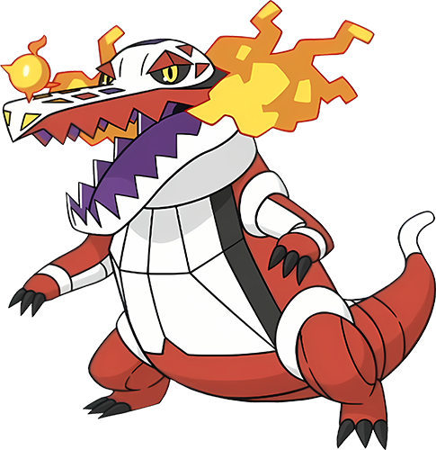
Le tout premier et plus ancien partenaire de Juliana. Leur lien est tel qu'ils peuvent improviser des stratégies élaborées sur le moment, sans avoir besoin de communiquer.
Flâmigator utilise parfois ses flammes spectrales pour la réchauffer la nuit, tout en veillant sur les fractures de son âme. Il fredonne souvent des sons graves et apaisants pour la calmer et l’aider à sortir d’un épisode.
Terraiste
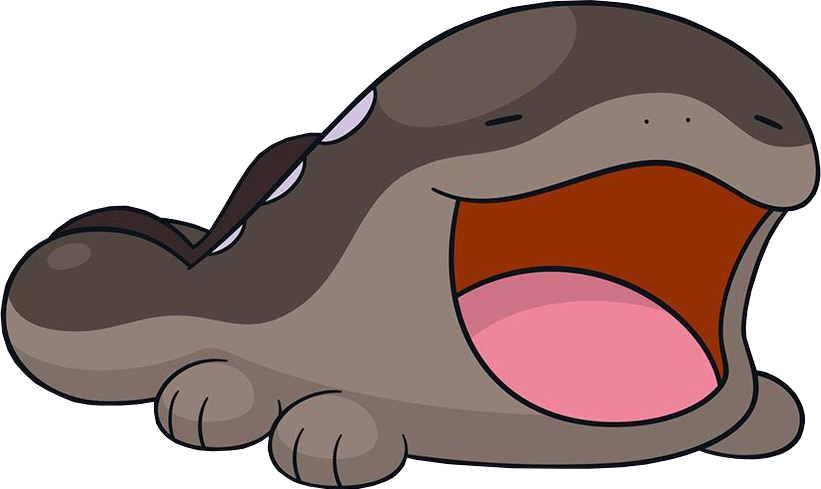
Un Pokémon d'une force trompeuse malgré son apparence toute simple. Terraiste semble ne jamais avoir conscience de tout ce qui se passe autour de lui, mais répond toujours présent avec un sourire béant.
Son passe-temps préféré consiste à faire la sieste dans une flaque de boue au soleil et à se blottir contre sa dresseuse. Juliana l’utilise secrètement comme peluche quand personne ne regarde, pour son plus grand plaisir.
Forgelina
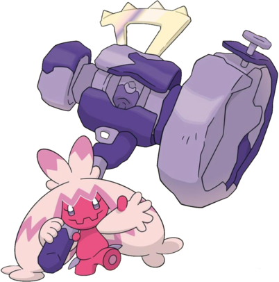
Joyeuse et espièglement malicieuse, Forgelina est le genre de Pokémon qui exige une surveillance de tous les instants, faute de quoi elle enverra valser un rocher sur un Corvaillus d'un coup de son énorme marteau.
Elle se montre amicale avec à peu près tout le monde et adore jouer avec les enfants ainsi qu'Ogerpon, tout en volant des objets en métal ou utilisant Terraiste comme projectile pour s'entraîner au tir.
Ogerpon
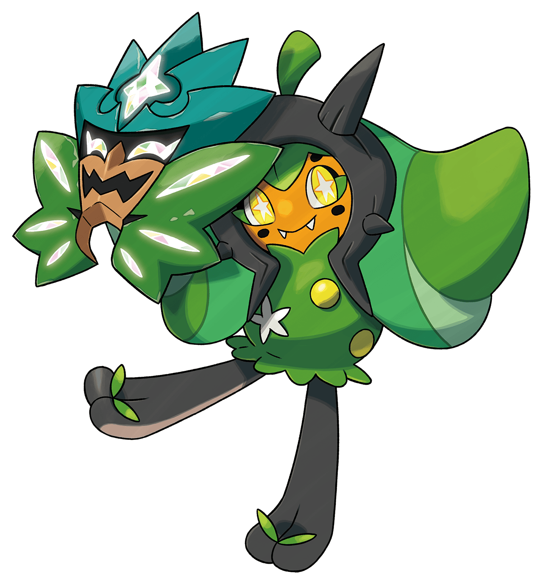
Profondément marquée par la perte de son ancien dresseur et des centenaires de solitude, Ogerpon est d'un naturel timide et préfère couvrir son visage derrière un masque en public. Elle se cache souvent derrière les jambes de Juliana pour éviter les gens.
Ogerpon est malgré tout douce et attentionnée avec sa dresseuse, ainsi qu'incroyablement protectrice. Elle montera la garde toute la nuit pour prévenir des dangers externes et réveiller Juliana d'un cauchemar.
Koraidon
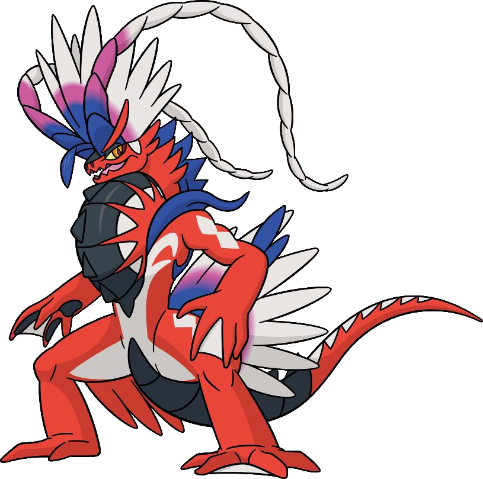
Toujours heureux de servir de monture à sa Dresseuse, Koraidon est officiellement le Pokémon de soutien émotionnel de Juliana. Les épreuves qu'ils ont traversés ensemble n'ont fait que renforcer leur lien.
Rendu hypervigilant par leur séparation et tout ce qui s'ensuivit, il est très sensible aux peurs de Juliana et réagit souvent de manière protectrice lorsqu'elles se manifestent. Secrètement, il a peur d'être séparé à nouveau et fera ce qu'il peut pour protéger ce qu'il considère comme sien.
Juliana s’inquiète pour lui et aimerait qu’il parvienne, parfois, à se détendre un peu… pour son propre bien.
Terapagos
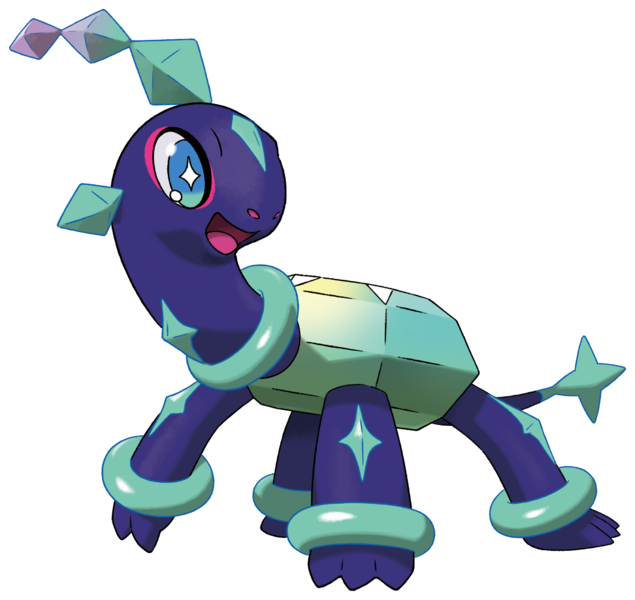
Terapagos est le bébé de l’équipe. Bien qu’il possède une puissance colossale et soit à l’origine même de la Téracristallisation, il a le regard grand ouvert et ignore tout du monde. Il le découvrira avec un émerveillement enfantin et d’adorables petits bruits. Sa curiosité le met souvent dans des situations impossibles.
Terapagos avait vécu des milliers d’années avant sa naissance et vivra encore pendant des éternités après sa disparition. Et pourtant, il regarde Juliana avec l’adoration qu’on réserverait à une mère. Il est totalement inconscient de son trouble intérieur et de ses sentiments, et ne se rend pas compte des petits sursauts qu’elle a chaque fois qu’il touche par inadvertance son bras de cristal.
Relations
Menzi
[Meilleure Amie / Rivale]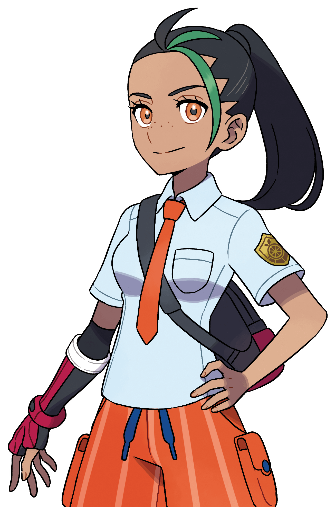
Sa première amie à Paldea et rivale de toujours, Menzi est une personne énergique profondément passionnée de combats Pokémons qui pousse encore et toujours Juliana à se dépasser. Malgré un handicap moteur et une faible endurance, c'est une Dresseuse de rang Maître à l'esprit compétitif.
Les gens ont tendance à s'arrêter à sa passion et son talent, la comparant à une prodige, ignorant ainsi le travail fourni pour en arriver là. Sa famille, bien qu'aisée et supposément aimante, est distante et très peu présente dans sa vie. Menzi se sentait ainsi profondément isolée de ses pairs, jusqu'à ce que Juliana arrive en Paldea. Elle présente une affection infaillible pour sa rivale, la seule personne pouvant lui offrir un réel combat, pouvant voir qui elle est réellement.
Menzi est un phare d'espoir et de lumière pour Juliana, l'introduisant à la région de Paldea et la soutenant contre vents et marrée. Juliana cache un crush pour elle.
Pania
[Meilleure Amie]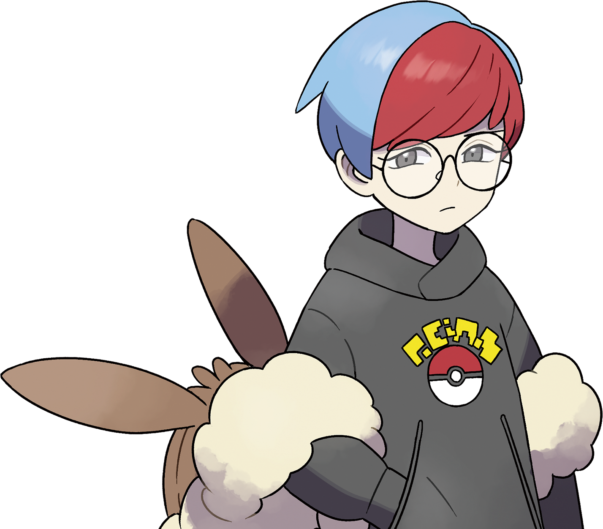
Anciennement connue sous le nom de Cassiopée, leader de la Team Star.
Pania est une geek introvertie, avec un sens de l'humour acerbe et des talents de hackeuse hors pair. Timide, peu de gens la connaissent réellement. Celles qui la côtoient savent toutefois qu'elle peut se montrer protectrice envers ceux qu'elle aime, qu'elle est particulièrement attentive, et que sa manière d'exprimer son affection passe par le partage des choses qui la passionnent, comme les séries télévisées ou son amour pour les Évoli.
Malgré elle la plus responsable du groupe, elle traque maintenant la géolocalisation du portable de Juliana pour s'assurer qu'elle ne s'attire pas d'ennuis. Elle peut se montrer directe, et n'hésitera pas à la trainer hors de responsabilités s'il le faut - de gré ou de force.
Pepper
[Meilleur Ami]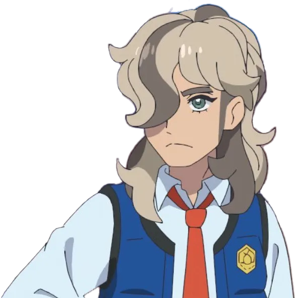
Un garçon bougon et renfermé. Pepper est passionné de cuisine et ne porte que peu d’intérêt aux combats Pokémon ou aux études.
Fils unique de la Professeure Olim, il s’est d’abord rapproché de Juliana en raison de son talent pour les combats Pokémon, malgré la méfiance qu’il éprouvait envers elle. Elle l’a aidé à récolter des épices secrètes à travers toute la région afin de soigner son Pokémon, Dogrino, auquel il tient tendrement. Il s'est alors ouvert de plus en plus à mesure que Dogrino guérit, jusqu’à devenir un ami précieux.
Pepper aime ses proches ouvertement et sans détour, mettant fièrement ses talents culinaires à leur service. Il a cependant tendance à se négliger lui-même, surtout face au deuil de sa mère et à son désir d’obtenir son diplôme en même temps que ses amis. Bien qu’il soit désordonné, Juliana le pousse souvent à prendre soin de lui-même contre son gré, et il le lui rend bien. Pepper est un peu comme un grand frère pour elle, en partie car quelques années plus vieux.
Clavel
[Directeur / Mentor]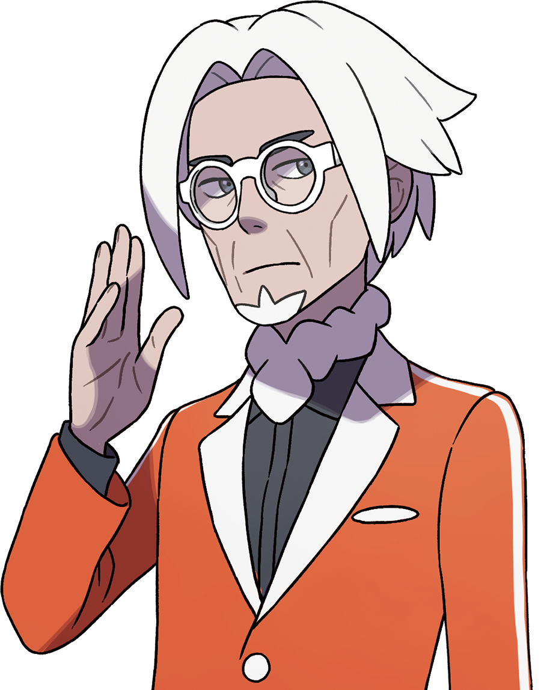
Proviseur de l'Institut Orange, Directeur Clavel est un homme d'apparence droit mais juste. Malgré son statut, il met un point d'honneur à être approchable et sur un même pied d'égalité que ses élèves et professeurs.
Clavel est la première personne a avoir accueilli Juliana en Paldea, lui confiant son premier Pokémon et suivant son parcours avec attention. C'est quelqu'un d'aimable qui n'hésitera pas à reconnaître ses torts - voir à se ridiculiser pour le bien-être de ses étudiants.
Juliana l'apprécie énormément et le voit comme un réel ami, presque mentor. C'est l'une des seules personnes au monde en qui elle confie une confiance aveugle en toutes circonstances. Il n'est pas rare de la retrouver dans son bureau à toutes heures, parlant avec enthousiasme de ses amis ou de sa journée, une tasse de thé à la main.
Olim
[Professeure / IA]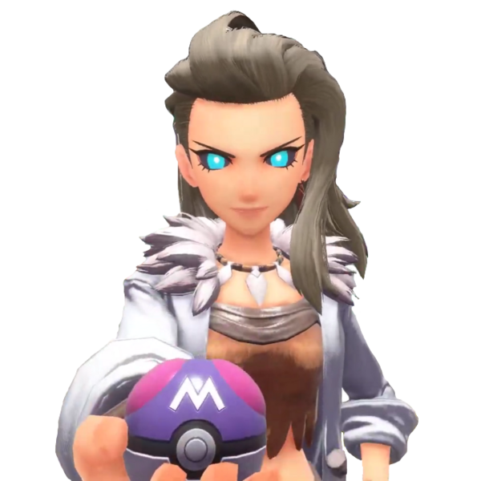
Autrefois professeure de renom cherchant les mystères de la région de Paldea, la mère de Pepper est décédée il y a des années en secret. Elle laissa derrière elle une IA à son effigie, ainsi qu'une terrible machine temporelle née de ses obsessions frénétiques. L'IA confia Koraidon à Juliana, demanda son aide pour détruire la machine, et finalement se sacrifia pour sauver la région.
Juliana entretient, post-mortem, une relation difficile avec la défunte Professeure et son IA. Elle a du mal à réconcilier l'amour d'Olim pour son fils, présent même dans l'IA, avec ses actions et rêves déments. Juliana a silencieusement juré à la mémoire du professeure de protéger Koraidon à tout jamais.
Elle se blâme encore elle-même pour son sacrifice et fait des cauchemars du programme "Défense Paradis", lorsque des éclats de Téracristallisation prirent le contrôle de l'IA. Le sentiment d'impuissance et le pouvoir démesuré de la machine sont des sources de traumatismes qui la hantent encore aujourd'hui.
Kassis
[Rival Autoproclâmé]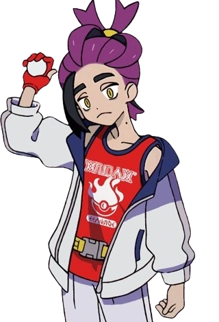
Un jeune garçon en provenance de Septentria et l'ex-Maître de la Ligue Myrtille, à Unys. Il partage un historique difficile avec Juliana autour d'Ogerpon et Terapagos.
A l'origine admiratif de son talent, il devint consumé par la haine et la jalousie suite aux évènements de Septentria. Il fit tout ce qu'il pu pour la dépasser, obnubilé par le désir de "devenir assez bon pour elle", en vain. Juliana lui sauva la vie et il pris conscience de ses erreurs, se confondant en excuses et faisant tout pour se faire pardonner depuis.
Malgré tout, Juliana ne lui voue aucun ressentiment, se blâmant elle-même pour tout ce qui c'est passé. Si les souvenirs douloureux de leur relation peuvent encore la rendre mal à l'aise, Kassis s'est prouvé être un réel ami sur lequel elle sait compter en cas de besoin.
Giovanni
[Boss de la Team Rainbow Rocket]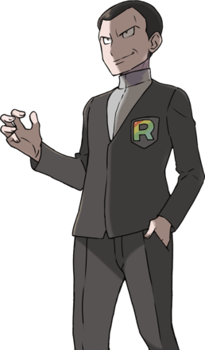
Boss de la Team Rainbow Rocket, Giovanni est un homme fier, cruel et sournois. C'est un maître manipulateur, un antagoniste froid et redoutable qui usera de tous les moyens à sa disposition pour arriver à ses fins.
Giovanni suit une philosophie de pouvoir absolu et de domination : pour lui, toute relation, humaine comme Pokémon, n'est qu'outil voué à être usé puis jeté pour son propre bénéfice. Il méprise les notions de compassion et d'altruisme qu'il voit comme de la lâcheté, des faiblesses enfantines. Persuadé que la véritable force consiste à écraser les plus faibles pour les remodeler à sa guise, il embrasse le pouvoir pur dans la poursuite du pouvoir même, écrasant quiconque se dresse sur son chemin.
Lors de son combat contre Juliana, alors que leurs philosophies de pouvoir s'affrontent, il utilise ses traumatismes comme armes contre elle : promettant le pouvoir de réparer ses erreurs si elle accepte de devenir son pion.
A ce jour, si ses amis n'étaient pas intervenus après sa défaite, Juliana ne sait toujours pas si elle aurait eu la force de refuser.
Madame Bria
[Enseignante Chercheuse en Téracristallisation]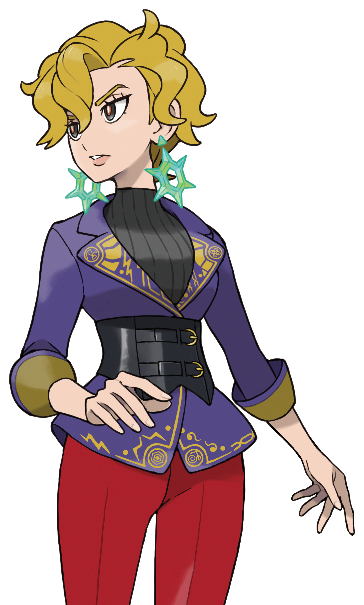
Bria est une enseignante chercheuse fascinée par la Téracristallistion et la Zone Zéro. Autrice d'un livre sur le sujet, elle nourrit une obsession maladive pour les recherches de la défunte Professeure Olim, qu'elle estime injustement dissimulées par la Ligue de Paldea. Poussée par une ambition démesurée, elle cherche à libérer le potentiel ultime de la Téracristallistion pour concrétiser le rêve de la professeure, étant inconsciente des dangers que cela peut impliquer pour Pokémon et élèves.
Pour parvenir à ses fins, Bria n'hésite pas franchir la ligne rouge : s'allier à Giovanni pour accéders sans limites aux trésors du cratère, installer un logiciel espion dans le téléphone de Juliana, voler et utiliser Terapagos comme source d'énergie pure. Le tout pour surcharger la machine du professeure Olim et la ramener à la vie, persuadée de manière tordue que c'est un cadeau pour sa "petite héroïne", Juliana.
Malgré sa folie des grandeur, Bria conserve une affection sincère (bien que mal placée) pour son élève, faisant bouclier de son propre corps pour protéger Juliana lorsque la machine surcharge à cause de l'énergie chaotique de Terapagos.
Galerie

Picrew
Par extrA_nocpno

In-Game Screenshot

In-Game Screenshot

In-Game Screenshot

In-Game Screenshot

In-Game Screenshot
Anecdotes
- Un cauchemar récurrent de Juliana au fil des années met en scène la Téracristallisation complète de son propre corps : elle y sent des cristaux se former lentement autour d’elle, l’envelopper, puis la piéger inexorablement dans une statue impuissante, incapable de bouger ou de respirer. Ce cauchemar a pris une dimension plus concrète lorsqu’elle fut confrontée, dans les laboratoires de la Team Rainbow Rocket, à la statue cristallisée d’un scientifique ayant subi cet exact sort.
- Le bras cristallisé de Juliana ne lui fait pas mal. Il est surtout engourdi, maladroit et lourd comme un poids mort, ses nerfs y étant comme "gelés". La cristallisation reste stable et ne menace pas directement sa santé, mais aucun expert consulté à ce jour n’a su proposer de remède. Juliana étant droitière, il lui arrive encore d’oublier son handicap, avec les petits accidents que cela implique.
- Depuis les événements de l’année passée, les proches de Juliana se sont mis d’accord pour ne plus la laisser seule trop longtemps. Ils ont établi un planning afin qu’au moins l’un d’entre eux soit toujours avec elle. Juliana leur en est reconnaissante, et s’accroche discrètement à cette présence constante.
- Juliana chérit son équipe Pokémon comme une véritable famille, et ceux-ci le lui rendent bien. Il n’est pas rare de voir Forgelina et Ogerpon la guider par la main à travers une foule lorsqu’elle se sent submergée, ou encore l’installer quelque part au calme avec un verre d’eau et ses médicaments lorsqu’elle oublie de les prendre.
- Koraidon peut se montrer particulièrement surprotecteur envers sa Dresseuse. Lors d’un voyage à Unys, il a déjà escaladé un immeuble de quinze étages simplement pour l’éloigner d'une situation qu'il jugeait problématique.
- Malgré les apparences qu’elle donne en public, Juliana fait difficilement confiance aux inconnus depuis ses différentes expériences, et se méfie tout particulièrement des adultes. À l’inverse, elle se montre étonnamment tactile avec ses proches : après des années passées à se réprimer pour préserver son image, il n’est pas rare de la retrouver littéralement collée à Pepper ou Menzi lorsqu’elle se repose.
- En compétition, Juliana tire sa force d’une capacité d’adaptation sans pareil et du lien fort qu’elle partage avec son équipe. Elle surprend souvent ses adversaires en reprenant à la volée certaines de leurs propres techniques ou en improvisant des stratégies sur l’instant. Elle aime aussi offrir un vrai spectacle au public, combattant de façon flashy avec un large sourire.
- Juliana et Menzi forment un duo redoutable en compétition, passant une grande partie de leur temps libre à s’entraîner ensemble. Elles se connaissent si bien qu’il leur arrive de commander le Pokémon de l’autre avec une aisance presque déconcertante, comme s’il s’agissait du leur.
- Après les événements de la Zone Zéro, Juliana a obtenu le contact de Beladonis, membre de la Police Internationale. Celui-ci a ensuite parlé d’elle à plusieurs de ses connaissances. C’est ainsi qu’un beau jour, Juliana a bien failli s’évanouir en voyant Cynthia se présenter à l’improviste devant sa porte.
- Malgré son amour pour la compétition, Juliana se découvre depuis peu un intérêt particulier pour le travail auprès de Pokémon difficiles. Cette évolution s’est notamment affirmée après un voyage à Alola, durant lequel elle a aidé la Fondation Aether à réhabiliter des Pokémon abandonnés par Giovanni. Cette expérience lui a permis de refermer une blessure dont elle ne soupçonnait même pas l’existence.
Note de l'Auteur
Juliana est un personnage qui n’a pas été pensé comme un OC, jusqu’à ce qu’il en devienne un. J’étais friand de fanfictions il y a quelques années déjà, et Pokémon Écarlate était encore frais dans mon esprit, son histoire DLC me laissant sur ma faim. J’aimais ce monde, ces personnages, et j’avais une vision personnelle que le jeu ne pouvait satisfaire.
Alors très bien,
me suis-je dit, je vais le faire moi-même.
C’est ainsi que je me suis lancé dans l’écriture d’une fanfiction trop ambitieuse, intitulée Ghosts of a Scarlet Past. Elle m’a pris un an et demi à compléter, elle était beaucoup trop longue tout en étant trop décousue, et je l’aime encore. C’était la première fois que j’écrivais quoi que ce soit, et mon style comme mon niveau ont visiblement progressé au fil des chapitres.
Ce qui m’intéressait dans cette fanfiction n’était pas seulement de revisiter certains personnages,
mais aussi de poser la question : qu’est-ce qui vient après ?
Pokémon est un monde parfait et idyllique, certes, mais les conflits interpersonnels et les tragédies y existent. Le scénario du jeu comporte des événements qui, pris avec du recul, pourraient être traumatisants pour l’enfant les vivant réellement. Et pourtant, notre personnage garde le sourire et avance, par pure force et volonté. Et pourtant, nous incarnons un héros inébranlable face à l’adversité.
Ainsi, tout est parti de ce postulat, de cette question simple qui mène à tant d’autres : que se passe-t-il quand le héros casse ?
Et si le sourire était un masque ? Pourquoi le héros fait-il ce qu’il fait, pourquoi continue-t-il ? Est-ce réellement par pure vaillance, ou parce qu’il ne sait pas comment tomber ? Si le héros ne peut plus être héros, que reste-t-il ? Qui est-il ?
C’est ainsi que la fanfiction s’ouvre sur une scène de terreur nocturne où notre protagoniste narre :
“She wasn’t always like this. You know, scared.”
Juliana est la protagoniste de Pokémon Écarlate et Violet, et aussi de cette fanfiction.
C’est un personnage à l’apparence personnalisable, avec peu de lore établi : quelques éléments
devinables et une aventure canon, uniquement. C’est un protagoniste, un véhicule pour le joueur
qui doit pouvoir s’y placer. Chaque personne ayant joué au jeu a sa propre Juliana
;
il n’existe pas une version définitive et universelle sur laquelle tout le monde sera d’accord.
Ainsi, lorsque j’ai écrit Ghosts of a Scarlet Past, l’intention était de conserver cela : aucune description physique de Juliana n’est faite durant le récit - un fait qui m’arrangeait bien, on ne va pas se mentir. Toute notion et référence à son passé, à sa vie privée au-delà du jeu, sont laissées vagues et libres à l’interprétation.
Mais, au fil des mois, quelque chose d’étrange est arrivé. Plus j’écrivais, plus cette version de Juliana, qui vivait entre mes pages blanches noircies de mots, me paraissait irréconciliable avec celle destinée à être remplacée par le bon vouloir de millions de joueurs. J’y ai inconsciemment injecté des éléments de ma propre personne, jusqu’à avoir ma propre version du personnage, une interprétation personnelle et distincte de l’originale. Je commençais à imaginer la Juliana que j’écrivais avec l’apparence de celle que j’ai jouée.
Et ainsi est né un personnage original dans son essence la plus pure : un dérivé du canon destiné à explorer une facette unique de son monde. Ce n’était pas mon intention, mais je me suis attaché à cette version de l’héroïne brisée qui apprend, malgré elle, à être une personne avant un symbole, à s’appuyer sur ses amis sans masquer sa peine.